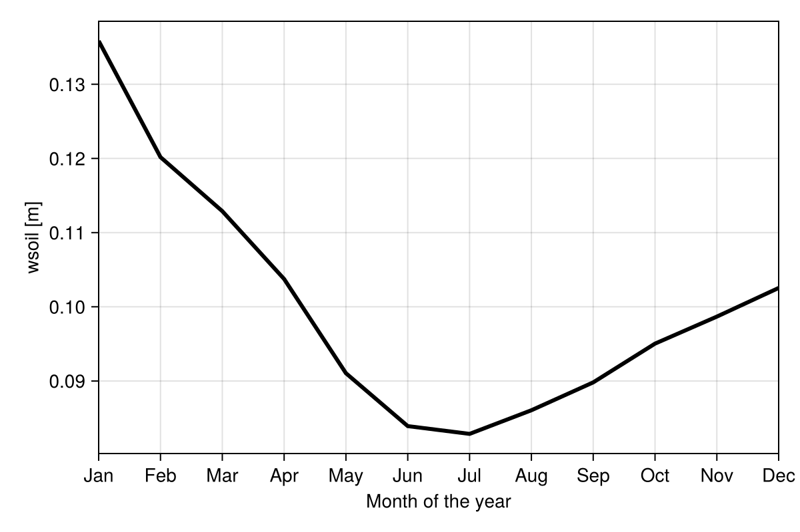

Global bucket run
The code sets up and runs the bucket model on a spherical domain, using ERA5 data.
First we import a lot of packages:
import ClimaComms
using ClimaCore
using ClimaUtilities
import Interpolations
import ClimaUtilities.TimeVaryingInputs:
TimeVaryingInput, LinearInterpolation, PeriodicCalendar
ClimaComms.@import_required_backends
import ClimaTimeSteppers as CTS
import ClimaParams as CP
using ClimaLand.Bucket:
BucketModel, BucketModelParameters, PrescribedBaregroundAlbedo
import ClimaLand
import ClimaLand.Parameters as LP
import ClimaLand.Simulations: LandSimulation, solve!
using Dates
using CairoMakie, ClimaAnalysis, GeoMakie, Printf, StatsBase
import ClimaLand.LandSimVis as LandSimVis;Set the simulation float type, determine the context (MPI or on a single node), and device type. Create a default output directory for diagnostics.
const FT = Float64;
context = ClimaComms.context()
ClimaComms.init(context)
device = ClimaComms.device()
device_suffix = device isa ClimaComms.CPUSingleThreaded ? "cpu" : "gpu"
root_path = "bucket_longrun_$(device_suffix)"
diagnostics_outdir = joinpath(root_path, "global_diagnostics")
outdir =
ClimaUtilities.OutputPathGenerator.generate_output_path(diagnostics_outdir);Set timestep, startdate, stopdate:
Δt = 900.0
start_date = DateTime(2008)
stop_date = DateTime(2009);Create the domain - this is intentionally low resolution, about 4.5 degrees x 4.5 degrees, to run quickly when making the documentation on CPU.
nelements = (20, 7)
depth = FT(3.5)
dz_tuple = FT.((1.0, 0.05))
domain =
ClimaLand.Domains.global_domain(FT; context, nelements, depth, dz_tuple);Parameters:
earth_param_set = LP.LandParameters(FT)
α_snow = FT(0.8)
albedo = PrescribedBaregroundAlbedo{FT}(α_snow, domain.space.surface)
bucket_parameters = BucketModelParameters(
FT;
albedo,
σS_c = FT(0.2),
W_f = FT(0.2),
z_0m = FT(1e-3),
z_0b = FT(1e-3),
κ_soil = FT(1.5),
ρc_soil = FT(2e6),
τc = FT(float(Δt)),
);Low-resolution forcing data from ERA5 is used here, but high-resolution should be used for production runs.
era5_ncdata_path = ClimaLand.Artifacts.era5_land_forcing_data2008_path(;
context,
lowres = true,
)
atmos, radiation = ClimaLand.prescribed_forcing_era5(
era5_ncdata_path,
domain.space.surface,
start_date,
earth_param_set,
FT;
max_wind_speed = 25.0,
time_interpolation_method = LinearInterpolation(PeriodicCalendar()),
regridder_type = :InterpolationsRegridder,
);Make the model:
bucket = BucketModel(
parameters = bucket_parameters,
domain = domain,
atmosphere = atmos,
radiation = radiation,
);Create a function which sets the initial conditions. This should have the argument structure (Y,p,t, model) in order to be used by the LandSimulation struct, below:
function set_ic!(Y, p, t, bucket)
coords = ClimaCore.Fields.coordinate_field(Y.bucket.T)
T_sfc_0 = 271.0
@. Y.bucket.T = T_sfc_0 + 40 * cosd(coords.lat)^4
Y.bucket.W .= 0.15
Y.bucket.Ws .= 0.0
Y.bucket.σS .= 0.0
endset_ic! (generic function with 1 method)Define timestepper and ODE algorithm
timestepper = CTS.RK4()
timestepper = CTS.ExplicitAlgorithm(timestepper);Create the simulation and solve it:
simulation = LandSimulation(
start_date,
stop_date,
Δt,
bucket;
set_ic!,
timestepper,
outdir,
);
solve!(simulation);┌ Info: Progress
│ simulation_time = "1 week, 3 days"
│ n_steps_completed = 1000
│ wall_time_per_step = "0 seconds"
│ wall_time_total = "0 seconds"
│ wall_time_remaining = "0 seconds"
│ wall_time_spent = "0 seconds"
│ percent_complete = "2.8%"
│ estimated_sypd = "Inf"
│ date_now = 2025-08-19T07:17:44.243
└ estimated_finish_date = 2025-08-19T07:17:44.243
┌ Info: Progress
│ simulation_time = "2 weeks, 6 days"
│ n_steps_completed = 2000
│ wall_time_per_step = "0 seconds"
│ wall_time_total = "0 seconds"
│ wall_time_remaining = "0 seconds"
│ wall_time_spent = "0 seconds"
│ percent_complete = "5.7%"
│ estimated_sypd = "Inf"
│ date_now = 2025-08-19T07:17:52.455
└ estimated_finish_date = 2025-08-19T07:17:52.455
[ Info: Checking NaNs in bucket
[ Info: Checking NaNs in W
[ Info: Checking NaNs in T
[ Info: Checking NaNs in Ws
[ Info: Checking NaNs in σS
┌ Info: Progress
│ simulation_time = "4 weeks, 3 days"
│ n_steps_completed = 3000
│ wall_time_per_step = "15 milliseconds, 689 microseconds"
│ wall_time_total = "9 minutes, 11 seconds"
│ wall_time_remaining = "8 minutes, 24 seconds"
│ wall_time_spent = "47 seconds, 69 milliseconds"
│ percent_complete = "8.5%"
│ estimated_sypd = "157.047"
│ date_now = 2025-08-19T07:18:16.178
└ estimated_finish_date = 2025-08-19T07:26:41.177
┌ Info: Progress
│ simulation_time = "5 weeks, 6 days"
│ n_steps_completed = 4000
│ wall_time_per_step = "13 milliseconds, 891 microseconds"
│ wall_time_total = "8 minutes, 8 seconds"
│ wall_time_remaining = "7 minutes, 12 seconds"
│ wall_time_spent = "55 seconds, 565 milliseconds"
│ percent_complete = "11.4%"
│ estimated_sypd = "177.382"
│ date_now = 2025-08-19T07:18:24.485
└ estimated_finish_date = 2025-08-19T07:25:37.485
┌ Info: Progress
│ simulation_time = "7 weeks, 3 days"
│ n_steps_completed = 5000
│ wall_time_per_step = "12 milliseconds, 751 microseconds"
│ wall_time_total = "7 minutes, 28 seconds"
│ wall_time_remaining = "6 minutes, 24 seconds"
│ wall_time_spent = "1 minute, 3 seconds"
│ percent_complete = "14.2%"
│ estimated_sypd = "193.236"
│ date_now = 2025-08-19T07:18:32.678
└ estimated_finish_date = 2025-08-19T07:24:57.678
[ Info: Checking NaNs in bucket
[ Info: Checking NaNs in W
[ Info: Checking NaNs in T
[ Info: Checking NaNs in Ws
[ Info: Checking NaNs in σS
┌ Info: Progress
│ simulation_time = "8 weeks, 6 days"
│ n_steps_completed = 6000
│ wall_time_per_step = "12 milliseconds, 60 microseconds"
│ wall_time_total = "7 minutes, 3 seconds"
│ wall_time_remaining = "5 minutes, 51 seconds"
│ wall_time_spent = "1 minute, 12 seconds"
│ percent_complete = "17.1%"
│ estimated_sypd = "204.314"
│ date_now = 2025-08-19T07:18:41.281
└ estimated_finish_date = 2025-08-19T07:24:33.281
┌ Info: Progress
│ simulation_time = "10 weeks, 2 days"
│ n_steps_completed = 7000
│ wall_time_per_step = "11 milliseconds, 528 microseconds"
│ wall_time_total = "6 minutes, 45 seconds"
│ wall_time_remaining = "5 minutes, 24 seconds"
│ wall_time_spent = "1 minute, 20 seconds"
│ percent_complete = "19.9%"
│ estimated_sypd = "213.731"
│ date_now = 2025-08-19T07:18:49.622
└ estimated_finish_date = 2025-08-19T07:24:14.622
┌ Info: Progress
│ simulation_time = "11 weeks, 6 days"
│ n_steps_completed = 8000
│ wall_time_per_step = "11 milliseconds, 149 microseconds"
│ wall_time_total = "6 minutes, 31 seconds"
│ wall_time_remaining = "5 minutes, 2 seconds"
│ wall_time_spent = "1 minute, 29 seconds"
│ percent_complete = "22.8%"
│ estimated_sypd = "221.012"
│ date_now = 2025-08-19T07:18:58.112
└ estimated_finish_date = 2025-08-19T07:24:01.112
[ Info: Checking NaNs in bucket
[ Info: Checking NaNs in W
[ Info: Checking NaNs in T
[ Info: Checking NaNs in Ws
[ Info: Checking NaNs in σS
┌ Info: Progress
│ simulation_time = "13 weeks, 2 days"
│ n_steps_completed = 9000
│ wall_time_per_step = "10 milliseconds, 849 microseconds"
│ wall_time_total = "6 minutes, 21 seconds"
│ wall_time_remaining = "4 minutes, 43 seconds"
│ wall_time_spent = "1 minute, 37 seconds"
│ percent_complete = "25.6%"
│ estimated_sypd = "227.113"
│ date_now = 2025-08-19T07:19:06.566
└ estimated_finish_date = 2025-08-19T07:23:50.566
┌ Info: Progress
│ simulation_time = "14 weeks, 6 days"
│ n_steps_completed = 10000
│ wall_time_per_step = "10 milliseconds, 626 microseconds"
│ wall_time_total = "6 minutes, 13 seconds"
│ wall_time_remaining = "4 minutes, 27 seconds"
│ wall_time_spent = "1 minute, 46 seconds"
│ percent_complete = "28.5%"
│ estimated_sypd = "231.886"
│ date_now = 2025-08-19T07:19:15.182
└ estimated_finish_date = 2025-08-19T07:23:43.182
┌ Info: Progress
│ simulation_time = "16 weeks, 2 days"
│ n_steps_completed = 11000
│ wall_time_per_step = "10 milliseconds, 451 microseconds"
│ wall_time_total = "6 minutes, 7 seconds"
│ wall_time_remaining = "4 minutes, 12 seconds"
│ wall_time_spent = "1 minute, 54 seconds"
│ percent_complete = "31.3%"
│ estimated_sypd = "235.773"
│ date_now = 2025-08-19T07:19:23.881
└ estimated_finish_date = 2025-08-19T07:23:36.881
[ Info: Checking NaNs in bucket
[ Info: Checking NaNs in W
[ Info: Checking NaNs in T
[ Info: Checking NaNs in Ws
[ Info: Checking NaNs in σS
┌ Info: Progress
│ simulation_time = "17 weeks, 6 days"
│ n_steps_completed = 12000
│ wall_time_per_step = "10 milliseconds, 309 microseconds"
│ wall_time_total = "6 minutes, 2 seconds"
│ wall_time_remaining = "3 minutes, 58 seconds"
│ wall_time_spent = "2 minutes, 3 seconds"
│ percent_complete = "34.2%"
│ estimated_sypd = "239.019"
│ date_now = 2025-08-19T07:19:32.629
└ estimated_finish_date = 2025-08-19T07:23:31.629
┌ Info: Progress
│ simulation_time = "19 weeks, 2 days"
│ n_steps_completed = 13000
│ wall_time_per_step = "10 milliseconds, 199 microseconds"
│ wall_time_total = "5 minutes, 58 seconds"
│ wall_time_remaining = "3 minutes, 45 seconds"
│ wall_time_spent = "2 minutes, 12 seconds"
│ percent_complete = "37.0%"
│ estimated_sypd = "241.592"
│ date_now = 2025-08-19T07:19:41.511
└ estimated_finish_date = 2025-08-19T07:23:27.511
┌ Info: Progress
│ simulation_time = "20 weeks, 5 days"
│ n_steps_completed = 14000
│ wall_time_per_step = "10 milliseconds, 109 microseconds"
│ wall_time_total = "5 minutes, 55 seconds"
│ wall_time_remaining = "3 minutes, 33 seconds"
│ wall_time_spent = "2 minutes, 21 seconds"
│ percent_complete = "39.8%"
│ estimated_sypd = "243.726"
│ date_now = 2025-08-19T07:19:50.460
└ estimated_finish_date = 2025-08-19T07:23:24.460
[ Info: Checking NaNs in bucket
[ Info: Checking NaNs in W
[ Info: Checking NaNs in T
[ Info: Checking NaNs in Ws
[ Info: Checking NaNs in σS
┌ Info: Progress
│ simulation_time = "22 weeks, 2 days"
│ n_steps_completed = 15000
│ wall_time_per_step = "10 milliseconds, 35 microseconds"
│ wall_time_total = "5 minutes, 52 seconds"
│ wall_time_remaining = "3 minutes, 22 seconds"
│ wall_time_spent = "2 minutes, 30 seconds"
│ percent_complete = "42.7%"
│ estimated_sypd = "245.527"
│ date_now = 2025-08-19T07:19:59.457
└ estimated_finish_date = 2025-08-19T07:23:22.457
┌ Info: Progress
│ simulation_time = "23 weeks, 5 days"
│ n_steps_completed = 16000
│ wall_time_per_step = "9 milliseconds, 972 microseconds"
│ wall_time_total = "5 minutes, 50 seconds"
│ wall_time_remaining = "3 minutes, 10 seconds"
│ wall_time_spent = "2 minutes, 39 seconds"
│ percent_complete = "45.5%"
│ estimated_sypd = "247.078"
│ date_now = 2025-08-19T07:20:08.485
└ estimated_finish_date = 2025-08-19T07:23:19.485
┌ Info: Progress
│ simulation_time = "25 weeks, 2 days"
│ n_steps_completed = 17000
│ wall_time_per_step = "9 milliseconds, 918 microseconds"
│ wall_time_total = "5 minutes, 48 seconds"
│ wall_time_remaining = "2 minutes, 59 seconds"
│ wall_time_spent = "2 minutes, 48 seconds"
│ percent_complete = "48.4%"
│ estimated_sypd = "248.43"
│ date_now = 2025-08-19T07:20:17.535
└ estimated_finish_date = 2025-08-19T07:23:17.535
[ Info: Checking NaNs in bucket
[ Info: Checking NaNs in W
[ Info: Checking NaNs in T
[ Info: Checking NaNs in Ws
[ Info: Checking NaNs in σS
┌ Info: Progress
│ simulation_time = "26 weeks, 5 days"
│ n_steps_completed = 18000
│ wall_time_per_step = "9 milliseconds, 873 microseconds"
│ wall_time_total = "5 minutes, 46 seconds"
│ wall_time_remaining = "2 minutes, 49 seconds"
│ wall_time_spent = "2 minutes, 57 seconds"
│ percent_complete = "51.2%"
│ estimated_sypd = "249.555"
│ date_now = 2025-08-19T07:20:26.649
└ estimated_finish_date = 2025-08-19T07:23:16.649
┌ Info: Progress
│ simulation_time = "28 weeks, 1 day"
│ n_steps_completed = 19000
│ wall_time_per_step = "9 milliseconds, 836 microseconds"
│ wall_time_total = "5 minutes, 45 seconds"
│ wall_time_remaining = "2 minutes, 38 seconds"
│ wall_time_spent = "3 minutes, 6 seconds"
│ percent_complete = "54.1%"
│ estimated_sypd = "250.511"
│ date_now = 2025-08-19T07:20:35.807
└ estimated_finish_date = 2025-08-19T07:23:14.807
┌ Info: Progress
│ simulation_time = "29 weeks, 5 days"
│ n_steps_completed = 20000
│ wall_time_per_step = "9 milliseconds, 797 microseconds"
│ wall_time_total = "5 minutes, 44 seconds"
│ wall_time_remaining = "2 minutes, 28 seconds"
│ wall_time_spent = "3 minutes, 15 seconds"
│ percent_complete = "56.9%"
│ estimated_sypd = "251.496"
│ date_now = 2025-08-19T07:20:44.873
└ estimated_finish_date = 2025-08-19T07:23:13.873
[ Info: Checking NaNs in bucket
[ Info: Checking NaNs in W
[ Info: Checking NaNs in T
[ Info: Checking NaNs in Ws
[ Info: Checking NaNs in σS
┌ Info: Progress
│ simulation_time = "31 weeks, 1 day"
│ n_steps_completed = 21000
│ wall_time_per_step = "9 milliseconds, 763 microseconds"
│ wall_time_total = "5 minutes, 43 seconds"
│ wall_time_remaining = "2 minutes, 18 seconds"
│ wall_time_spent = "3 minutes, 25 seconds"
│ percent_complete = "59.8%"
│ estimated_sypd = "252.387"
│ date_now = 2025-08-19T07:20:53.944
└ estimated_finish_date = 2025-08-19T07:23:12.944
┌ Info: Progress
│ simulation_time = "32 weeks, 5 days"
│ n_steps_completed = 22000
│ wall_time_per_step = "9 milliseconds, 729 microseconds"
│ wall_time_total = "5 minutes, 41 seconds"
│ wall_time_remaining = "2 minutes, 7 seconds"
│ wall_time_spent = "3 minutes, 34 seconds"
│ percent_complete = "62.6%"
│ estimated_sypd = "253.253"
│ date_now = 2025-08-19T07:21:02.972
└ estimated_finish_date = 2025-08-19T07:23:10.972
┌ Info: Progress
│ simulation_time = "34 weeks, 1 day"
│ n_steps_completed = 23000
│ wall_time_per_step = "9 milliseconds, 697 microseconds"
│ wall_time_total = "5 minutes, 40 seconds"
│ wall_time_remaining = "1 minute, 57 seconds"
│ wall_time_spent = "3 minutes, 43 seconds"
│ percent_complete = "65.5%"
│ estimated_sypd = "254.092"
│ date_now = 2025-08-19T07:21:11.963
└ estimated_finish_date = 2025-08-19T07:23:09.963
[ Info: Checking NaNs in bucket
[ Info: Checking NaNs in W
[ Info: Checking NaNs in T
[ Info: Checking NaNs in Ws
[ Info: Checking NaNs in σS
┌ Info: Progress
│ simulation_time = "35 weeks, 5 days"
│ n_steps_completed = 24000
│ wall_time_per_step = "9 milliseconds, 662 microseconds"
│ wall_time_total = "5 minutes, 39 seconds"
│ wall_time_remaining = "1 minute, 47 seconds"
│ wall_time_spent = "3 minutes, 51 seconds"
│ percent_complete = "68.3%"
│ estimated_sypd = "255.014"
│ date_now = 2025-08-19T07:21:20.820
└ estimated_finish_date = 2025-08-19T07:23:08.819
┌ Info: Progress
│ simulation_time = "37 weeks, 1 day"
│ n_steps_completed = 25000
│ wall_time_per_step = "9 milliseconds, 626 microseconds"
│ wall_time_total = "5 minutes, 38 seconds"
│ wall_time_remaining = "1 minute, 37 seconds"
│ wall_time_spent = "4 minutes, 658 milliseconds"
│ percent_complete = "71.2%"
│ estimated_sypd = "255.972"
│ date_now = 2025-08-19T07:21:29.578
└ estimated_finish_date = 2025-08-19T07:23:07.578
┌ Info: Progress
│ simulation_time = "38 weeks, 4 days"
│ n_steps_completed = 26000
│ wall_time_per_step = "9 milliseconds, 589 microseconds"
│ wall_time_total = "5 minutes, 36 seconds"
│ wall_time_remaining = "1 minute, 27 seconds"
│ wall_time_spent = "4 minutes, 9 seconds"
│ percent_complete = "74.0%"
│ estimated_sypd = "256.966"
│ date_now = 2025-08-19T07:21:38.236
└ estimated_finish_date = 2025-08-19T07:23:06.236
[ Info: Checking NaNs in bucket
[ Info: Checking NaNs in W
[ Info: Checking NaNs in T
[ Info: Checking NaNs in Ws
[ Info: Checking NaNs in σS
┌ Info: Progress
│ simulation_time = "40 weeks, 1 day"
│ n_steps_completed = 27000
│ wall_time_per_step = "9 milliseconds, 546 microseconds"
│ wall_time_total = "5 minutes, 35 seconds"
│ wall_time_remaining = "1 minute, 17 seconds"
│ wall_time_spent = "4 minutes, 17 seconds"
│ percent_complete = "76.8%"
│ estimated_sypd = "258.108"
│ date_now = 2025-08-19T07:21:46.680
└ estimated_finish_date = 2025-08-19T07:23:04.680
┌ Info: Progress
│ simulation_time = "41 weeks, 4 days"
│ n_steps_completed = 28000
│ wall_time_per_step = "9 milliseconds, 505 microseconds"
│ wall_time_total = "5 minutes, 33 seconds"
│ wall_time_remaining = "1 minute, 7 seconds"
│ wall_time_spent = "4 minutes, 26 seconds"
│ percent_complete = "79.7%"
│ estimated_sypd = "259.219"
│ date_now = 2025-08-19T07:21:55.080
└ estimated_finish_date = 2025-08-19T07:23:03.080
┌ Info: Progress
│ simulation_time = "43 weeks, 1 day"
│ n_steps_completed = 29000
│ wall_time_per_step = "9 milliseconds, 461 microseconds"
│ wall_time_total = "5 minutes, 32 seconds"
│ wall_time_remaining = "58 seconds, 57 milliseconds"
│ wall_time_spent = "4 minutes, 34 seconds"
│ percent_complete = "82.5%"
│ estimated_sypd = "260.421"
│ date_now = 2025-08-19T07:22:03.313
└ estimated_finish_date = 2025-08-19T07:23:02.313
[ Info: Checking NaNs in bucket
[ Info: Checking NaNs in W
[ Info: Checking NaNs in T
[ Info: Checking NaNs in Ws
[ Info: Checking NaNs in σS
┌ Info: Progress
│ simulation_time = "44 weeks, 4 days"
│ n_steps_completed = 30000
│ wall_time_per_step = "9 milliseconds, 421 microseconds"
│ wall_time_total = "5 minutes, 31 seconds"
│ wall_time_remaining = "48 seconds, 391 milliseconds"
│ wall_time_spent = "4 minutes, 42 seconds"
│ percent_complete = "85.4%"
│ estimated_sypd = "261.523"
│ date_now = 2025-08-19T07:22:11.580
└ estimated_finish_date = 2025-08-19T07:23:00.580
┌ Info: Progress
│ simulation_time = "46 weeks, 22 hours"
│ n_steps_completed = 31000
│ wall_time_per_step = "9 milliseconds, 385 microseconds"
│ wall_time_total = "5 minutes, 29 seconds"
│ wall_time_remaining = "38 seconds, 820 milliseconds"
│ wall_time_spent = "4 minutes, 50 seconds"
│ percent_complete = "88.2%"
│ estimated_sypd = "262.528"
│ date_now = 2025-08-19T07:22:19.884
└ estimated_finish_date = 2025-08-19T07:22:58.884
┌ Info: Progress
│ simulation_time = "47 weeks, 4 days"
│ n_steps_completed = 32000
│ wall_time_per_step = "9 milliseconds, 346 microseconds"
│ wall_time_total = "5 minutes, 28 seconds"
│ wall_time_remaining = "29 seconds, 310 milliseconds"
│ wall_time_spent = "4 minutes, 59 seconds"
│ percent_complete = "91.1%"
│ estimated_sypd = "263.64"
│ date_now = 2025-08-19T07:22:28.003
└ estimated_finish_date = 2025-08-19T07:22:58.003
[ Info: Checking NaNs in bucket
[ Info: Checking NaNs in W
[ Info: Checking NaNs in T
[ Info: Checking NaNs in Ws
[ Info: Checking NaNs in σS
┌ Info: Progress
│ simulation_time = "49 weeks, 18 hours"
│ n_steps_completed = 33000
│ wall_time_per_step = "9 milliseconds, 312 microseconds"
│ wall_time_total = "5 minutes, 27 seconds"
│ wall_time_remaining = "19 seconds, 890 milliseconds"
│ wall_time_spent = "5 minutes, 7 seconds"
│ percent_complete = "93.9%"
│ estimated_sypd = "264.607"
│ date_now = 2025-08-19T07:22:36.222
└ estimated_finish_date = 2025-08-19T07:22:56.222
┌ Info: Progress
│ simulation_time = "50 weeks, 4 days"
│ n_steps_completed = 34000
│ wall_time_per_step = "9 milliseconds, 281 microseconds"
│ wall_time_total = "5 minutes, 26 seconds"
│ wall_time_remaining = "10 seconds, 543 milliseconds"
│ wall_time_spent = "5 minutes, 15 seconds"
│ percent_complete = "96.8%"
│ estimated_sypd = "265.493"
│ date_now = 2025-08-19T07:22:44.477
└ estimated_finish_date = 2025-08-19T07:22:55.477
┌ Info: Progress
│ simulation_time = "52 weeks, 14 hours"
│ n_steps_completed = 35000
│ wall_time_per_step = "9 milliseconds, 246 microseconds"
│ wall_time_total = "5 minutes, 24 seconds"
│ wall_time_remaining = "1 second, 257 milliseconds"
│ wall_time_spent = "5 minutes, 23 seconds"
│ percent_complete = "99.6%"
│ estimated_sypd = "266.479"
│ date_now = 2025-08-19T07:22:52.556
└ estimated_finish_date = 2025-08-19T07:22:54.556
[ Info: Checking NaNs in bucket
[ Info: Checking NaNs in W
[ Info: Checking NaNs in T
[ Info: Checking NaNs in Ws
[ Info: Checking NaNs in σS
Make some plots:
short_names = ["lhf", "shf", "wsoil"]
LandSimVis.make_annual_timeseries(
simulation;
savedir = ".",
short_names,
plot_stem_name = "bucket_annual_timeseries",
)
LandSimVis.make_heatmaps(
simulation;
savedir = ".",
short_names,
date = stop_date,
plot_stem_name = "bucket_heatmap",
)


This page was generated using Literate.jl.